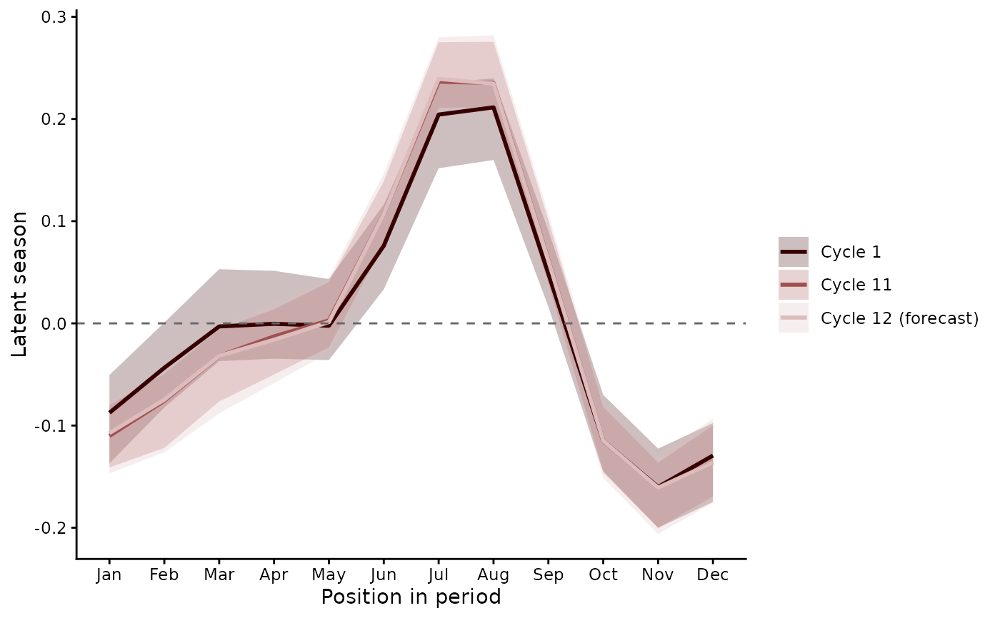
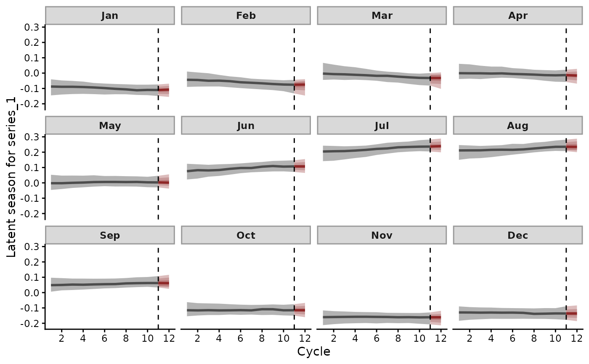
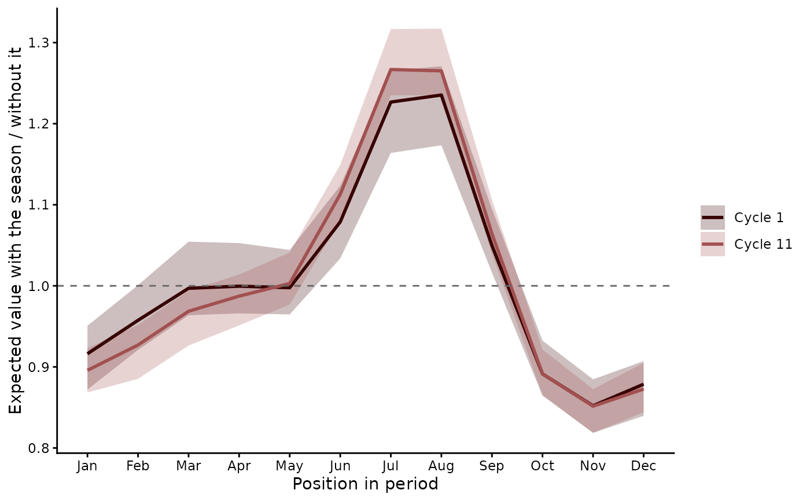

Lays out the posterior season of an LLT() trend by position
within its period. It reports the size of the seasonal swing and
where in the period it peaks, cycle by cycle. With newdata the
season continues into the forecast horizon. The season is part of
the latent trend, on the link scale. scale reports it on the scale
of the expected value.
Usage
seasonality(object, ...)
# S3 method for class 'mvgam'
seasonality(
object,
newdata = NULL,
...,
ndraws = NULL,
draw_ids = NULL,
scale = c("link", "expected", "ratio"),
resp = NULL
)
# S3 method for class 'mvgam_seasonality'
summary(object, probs = c(0.025, 0.975), ...)
# S3 method for class 'mvgam_seasonality'
print(x, digits = 2L, ...)
# S3 method for class 'mvgam_seasonality'
plot(
x,
type = c("profile", "positions"),
period = NULL,
series = NULL,
cycles = NULL,
prob = 0.9,
...
)Arguments
- object
A fitted
mvgamobject whose trend isLLT(season = ...).- ...
Unused. Anything passed here is refused.
- newdata
Optional data frame of future times, as
forecast.mvgam()takes it. The forecast season then extends each series.- ndraws, draw_ids
The posterior draws to use, as
hindcast.mvgam()takes them.NULLfor both uses every draw.- scale
"link"(the default) reports the latent season."expected"reports its contribution to the expected value: the expected value with the season less the expected value without it."ratio"reports the first of those over the second. Under a log link that ratio is the season's multiplicative effect.- resp
The response to report, needed on a model with several.
- probs
Interval probabilities of the tables. Defaults to
c(0.025, 0.975).- x
An
mvgam_seasonalityobject fromseasonality().- digits
Number of decimal places to print. Defaults to
2.- type
"profile"(the default) draws the season against position for a few cycles, one panel per series."positions"draws one panel per position, the season over the cycles.- period
Which period to draw when the trend has several, by its name such as
"season_7". Defaults to the first.- series
For
type = "positions", the series to draw, by name or index. Defaults to the first.- cycles
For
type = "profile", the cycles to draw. Defaults to the first and last complete fitted cycles and the first complete forecast cycle.- prob
For
type = "profile", the width of the posterior interval. Defaults to0.9.type = "positions"draws the nested intervals ofplot.mvgam_forecast().
Value
An object of class mvgam_seasonality. print() gives each
series' amplitude and peak in its first and last complete cycles.
summary() returns five tables: profile, amplitude, peak,
strength and change, the last comparing the first and last
complete cycles.
plot() draws the profile by position, or one panel per position
over the cycles.
Details
Positions. A position counts steps within one period. Data from
series_to_mvgam() carry a season column, or one season_<period>
column per period, counted from the calendar. Position 1 of a
twelve-month period is then January. A twelve-step period is
labelled by month and a four-step one by quarter. Without the
column, position 1 is the first fitted time and later times continue
from it.
Cycles. A cycle is one pass through the period. A cycle that holds every position is complete. Only complete cycles are summarised.
Amplitude and peak. The amplitude of a cycle is half the range of the season within it. Its peak is the position of the largest value. Both are computed draw by draw. A change between the first and the last complete cycle then comes with its posterior probability.
Strength. The strength of a fitted cycle is the season's share of
the variance of the link predictor over that cycle:
Var(season) / (Var(season) + Var(predictor less season)), computed
draw by draw. It runs from 0 to 1 on every scale. A cycle spans
little of the level's long-run drift, which leaves the season's
share visible in a series dominated by that drift. A cycle reaching
the forecast has no strength: its predictor mixes the season with
fresh innovations.
Scale. The expected value comes from the fit's own family, draw by draw, with every other part of the predictor at its fitted or forecast value. Under a non-linear link the response-scale season then moves with the level. Its amplitude can grow while the latent season stays fixed.
A trend with several periods, such as LLT(season = c(7, 365.25)),
reports each period's season separately.
See also
LLT() for the seasonal model, series_to_mvgam() for
the calendar positions, forecast.mvgam() with
component = "season" for the season along time
Examples
# \dontrun{
# Monthly airline passengers, the final year held out
air <- series_to_mvgam(AirPassengers, h = 12)
mod <- mvgam(
y ~ 1,
trend_formula = ~ LLT(season = 12, harmonics = 3),
data = air$data_train,
family = poisson(),
chains = 2,
silent = 2
)
#> Warning: 522 of 2000 (26.0%) transitions ended with a divergence.
#> See https://mc-stan.org/misc/warnings for details.
# Amplitude and peak month, first and last complete year
s <- seasonality(mod, newdata = air$data_test)
s
#> Seasonal pattern of the latent trend (link scale), 2000 draws
#> First and last complete cycles. summary() gives every cycle.
#>
#> Period 12 (season)
#> series_1
#> amplitude 0.19 -> 0.21, P(larger) = 0.87
#> peak Aug (0.68) -> Jul (0.57), P(earlier) = 0.39, P(later) = 0.14
#> strength 0.92 -> 0.91
# The season by month in the first, last and forecast years
plot(s)

# Each month's effect over the years and into the forecast
plot(s, type = "positions")

# How the swing and its peak changed between the first and last year
summary(s)$change
#> # A tibble: 1 × 13
#> series period from_cycle to_cycle ratio_Q50 ratio_Q2.5 ratio_Q97.5 prob_larger
#> <chr> <chr> <int> <int> <dbl> <dbl> <dbl> <dbl>
#> 1 serie… season 1 12 1.07 0.918 1.47 0.868
#> # ℹ 5 more variables: shift_Q50 <dbl>, shift_Q2.5 <dbl>, shift_Q97.5 <dbl>,
#> # prob_earlier <dbl>, prob_later <dbl>
# The season as a multiple of the expected passenger count
plot(seasonality(mod, scale = "ratio"))

# }